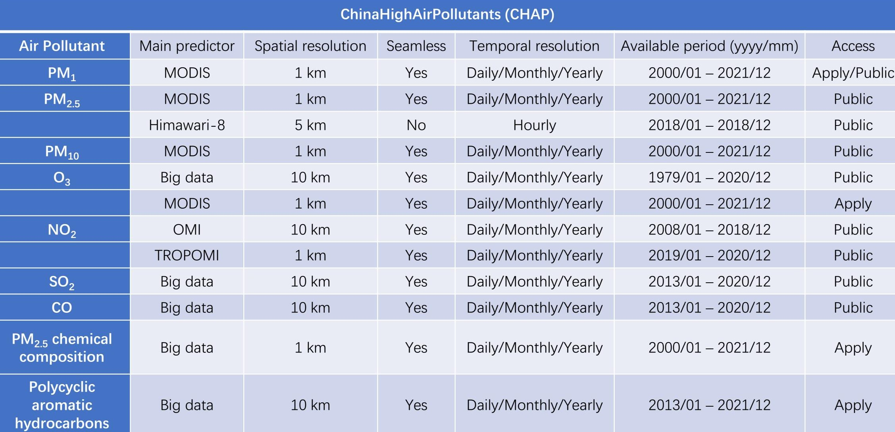

New update: New seamless 1 km ChinaHighPM1 dataset released!
Brief Introduction
The GlobalHighAirPollutants (GHAP) dataset refers to the long-term, full-coverage, high-resolution, and high-quality datasets of global ground-level air pollutants over land. Similarly, it is generated from the big data using artificial intelligence by considering the spatiotemporal heterogeneity of air pollution, and now it contains PM2.5 (1 km) and NO2 (1 km), and more species of air pollutants will be generated in the future.
GlobalHighPM2.5 dataset
Big data (seamless): 1 km, 2019-2020, Daily/Monthly/Yearly (Version 1)
Link: 【Zenodo】
Reference: Wei, J., Li, Z., et al. In preparation.

GlobalHighNO2 dataset
Big data (seamless): 1 km, 2019-2020, Daily/Monthly/Yearly (Version 1)
Link: 【Zenodo】
Reference: Wei, J., liu, S., Li, Z., et al. In preparation.

Brief Introduction
The ChinaHighAirPollutants (CHAP) dataset refers to the long-term, full-coverage, high-resolution, and high-quality datasets of ground-level air pollutants for China. It is generated from the big data (e.g., ground-based measurements, satellite remote sensing products, atmospheric reanalysis, and model simulations) using artificial intelligence by considering the spatiotemporal heterogeneity of air pollution. The CHAP dataset contains 7 major air pollutants (i.e., PM1, PM2.5, PM10, O3, NO2, SO2, and CO), and PM2.5 chemical compositions (i.e., SO42-, NO3-, NH4+, Cl-, BC, and OM). This CHAP dataset is public and freely open to all users!
Dataset summary
ChinaHighPM2.5 dataset
[1] Big data (seamless): 1 km, 2000-2021, Daily/Monthly/Yearly (Version 4)
Link: 【Zenodo】, 【国家地球系统科学数据中心: 日, 月, 年】
Reference:
Wei, J., Li, Z., Lyapustin, A., Sun, L., Peng, Y., Xue, W., Su, T., and Cribb, M. Reconstructing 1-km-resolution high-quality PM2.5 data records from 2000 to 2018 in China: spatiotemporal variations and policy implications. Remote Sensing of Environment, 2021, 252, 112136. https://doi.org/10.1016/j.rse.2020.112136 (ESI Hot and Highly Cited Paper, Journal Most Cited Articles since 2019/2020, Top 100 Most Cited Chinese Papers Published in International Journals, ESSIC 2022 Best Paper Award, Editor Invitation)
Wei, J., Li, Z., Cribb, M., Huang, W., Xue, W., Sun, L., Guo, J., Peng, Y., Li, J., Lyapustin, A., Liu, L., Wu, H., and Song, Y. Improved 1 km resolution PM2.5 estimates across China using enhanced space-time extremely randomized trees. Atmospheric Chemistry and Physics, 2020, 20, 3273–3289. https://doi.org/10.5194/acp-20-3273-2020 (ESI Hot and Highly Cited Paper)
[2] Himawari-8: Eastern China, 5 km, 2018, Hourly (Version 1)
Link: 【Zenodo】
Reference: Wei, J., Li, Z., Pinker, R., Wang, J., Sun, L., Xue, W., Li, R., and Cribb, M. Himawari-8-derived diurnal variations of ground-level PM2.5 pollution across China using a fast space-time Light Gradient Boosting Machine (LightGBM). Atmospheric Chemistry and Physics, 2021, 21, 7863–7880. https://doi.org/10.5194/acp-21-7863-2021 (ESI Highly Cited Paper)

ChinaHighPMC dataset
Big data (seamless): 1 km, 2000-2021, Daily/Monthly/Yearly (Version 1)
Link: 【Zenodo】 (This dataset is now available upon request).
Reference: Wei, J., Li, Z., et al. Separating PM2.5 inorganic chemical composition across China via deep learning combined with ground monitors, satellites, and models. To be submitted.

ChinaHighPM10 dataset
Big data (seamless): 1 km, 2000-2021, Daily/Monthly/Yearly (Version 4)
Link: 【Zenodo】, 【国家地球系统科学数据中心: 日, 月, 年】
Reference: Wei, J., Li, Z., Xue, W., Sun, L., Fan, T., Liu, L., Su, T., and Cribb, M. The ChinaHighPM10 dataset: generation, validation, and spatiotemporal variations from 2013 to 2019 across China. Environment International, 2021, 146, 106290. https://doi.org/10.1016/j.envint.2020.106290 (ESI Highly Cited Paper)

ChinaHighPM1 dataset
Big data (seamless): 1 km, 2000-2021, Daily/Monthly/Yearly (Version 3)
Link: 【Zenodo】
Reference: Wei, J., Li, Z., Guo, J., Sun, L., Huang, W., Xue, W., Fan, T, and Cribb, M. Satellite-derived 1-km-resolution PM1 concentrations from 2014 to 2018 across China. Environmental Science & Technology, 2019, 53(22), 13265-13274. https://doi.org/10.1021/acs.est.9b03258 (ESI Hot and Highly Cited Paper)

ChinaHighO3 dataset
Big data (seamless): 10 km, 1979-2020, Daily/Monthly/Yearly (Version 1)
Link: 【Zenodo】, 【国家地球系统科学数据中心: 日, 月, 年】
Big data (seamless): 1 km, 2013-2020, Daily/Monthly/Yearly (Version 1)
Link (2013-2020): Will release soon!
Reference:
[1] Wei, J., Li, Z., Li, K., Dickerson, R., Pinker, R., Wang, J., Liu, X., Sun, L., Xue, W., and Cribb, M. Full-coverage mapping and spatiotemporal variations of ground-level ozone (O3) pollution from 2013 to 2020 across China. Remote Sensing of Environment, 2022, 270, 112775. https://doi.org/10.1016/j.rse.2021.112775 (ESI Hot and Highly Cited Paper)
[2] He, L., Wei, J., Wang, Y., Shang, Q., Liu, J., Yin, Y., Frankerberg, C., Jiang, J., Li, Z., and Yung, Y. Marked impacts of pollution mitigation on crop yields in China. Earth's Future, 2022, 10, e2022EF002936. https://doi.org/10.1029/2022EF002936

ChinaHighNO2 dataset
[1] Big data (seamless): 1 km, 2019-2020, Daily/Monthly/Yearly (Version 1)
Link (1 km, 2019-2020): 【Zenodo】, 【国家地球系统科学数据中心: 日, 月, 年】
Reference: Wei, J., Liu, S., Li, Z., Liu, C., Qin, K., Liu, X., Pinker, R., Dickerson, R., Lin, J., Boersma, K., Sun, L., Li, R., Xue, W., Cui, Y., Zhang, C., and Wang, J. Ground-level NO2 surveillance from space across China for high resolution using interpretable spatiotemporally weighted artificial intelligence. Environmental Science and Technology, 2022, 56(14), 9988–9998. https://doi.org/10.1021/acs.est.2c03834 (Editor Invitation)
[2] Big data (seamless): 10 km, 2008-2020, Daily/Monthly/Yearly (Version 1)
Link (2013-2020): 【Zenodo】
Reference: Wei, J., Li, Z., Wang, J., Li, C., Gupta, P., and Cribb, M. Ground-level gaseous pollutants across China: daily seamless mapping and long-term spatiotemporal variations. Atmospheric Chemistry and Physics Discussion, 2022, in review. https://doi.org/10.5194/acp-2022-627

ChinaHighSO2 dataset
Big data (seamless): 10 km, 2013-2020, Daily/Monthly/Yearly (Version 1)
Link (2013-2020): 【Zenodo】
Reference: Wei, J., Li, Z., Wang, J., Li, C., Gupta, P., and Cribb, M. Ground-level gaseous pollutants across China: daily seamless mapping and long-term spatiotemporal variations. Atmospheric Chemistry and Physics Discussion, 2022, in review. https://doi.org/10.5194/acp-2022-627

ChinaHighCO dataset
Big data (seamless): 10 km, 2013-2020, Daily/Monthly/Yearly (Version 1)
Link (2013-2020): 【Zenodo】
Reference: Wei, J., Li, Z., Wang, J., Li, C., Gupta, P., and Cribb, M. Ground-level gaseous pollutants across China: daily seamless mapping and long-term spatiotemporal variations. Atmospheric Chemistry and Physics Discussion, 2022, in review. https://doi.org/10.5194/acp-2022-627

Brief Introduction
The USHighAirPollutants (USHAP) dataset refers to the long-term, full-coverage, high-resolution, and high-quality datasets of ground-level air pollutants for the Continental United States. Similarly, it is generated from the big data using artificial intelligence by considering the spatiotemporal heterogeneity of air pollution, and now it contains PM2.5 and BC (1 km), and more species of air pollutants will be generated in the future.
USHighPM2.5 dataset
Big data (seamless): 1 km, 2000-2020, Daily/Monthly/Yearly (Version 1)
Link: Will soon release!
USHighPMC dataset
Big data (seamless): 1 km, 2000-2020, Daily/Monthly/Yearly (Version 1)
Link: Will soon release!
Reference: Wei, J., Wang, J., et al. In preparation.

Dataset codes
Data type conversion (from .nc to .tif): [1] Python code; [2] Matlab code; [3] IDL code; [4] R code
News/reports on our dataset
University of Maryland: Li and Wei Published on Air Pollution in China
Beijing Normal University: Dr. Jing Wei released the high-resolution and high-quality air pollution dataset in China
Publications using our dataset (126)
Health effects of air pollution (77)
Ao, L., Zhou, J., Han, M., Li, H., Li, Y., Pan, Y., Chen, J., Xie, X., Jiang, Y., Wei, J., Chen, G., Li, S., Guo, Y., Hong, F., Li, Z., Xiao, X., and Zhao, X. The joint effects of physical activity and air pollution on type 2 diabetes in older adults. BMC Geriatrics, 2022, 22, 472. https://doi.org/10.1186/s12877-022-03139-8
Bai, H., Yan, R., Gao, W., Wei, J., and Seong, M. Spatial representativeness of PM2.5 monitoring stations and its implication for health assessment. Air Quality, Atmosphere & Health, 2022. https://doi.org/10.1007/s11869-022-01202-2
Cai, M., Zhang, S., Lin, X., Qian, Z., McMillin, S., Yang, Y., Pan, J., and Lin, H. Association of ambient particulate matter pollution of different sizes with in-hospital case fatality among stroke patients in China. Neurology, 2022, 98, 24. https://doi.org/10.1212/WNL.0000000000200546
Cai, M., Wei, J., Zhang, S., Liu, W., Wang, L., Qian, Z., Lin, H., Liu, E., McMillin, S., Cao, Y., and Yin, P. Short-term air pollution exposure associated with death from kidney diseases: a nationwide time-stratifed case-crossover study in China from 2015 to 2019. BMC Medicine, 2023, 21, 32. https://doi.org/10.1186/s12916-023-02734-9
Cai, M., Lin, X., Wang, X., Zhang, S., Qian, Z., McMillin, S., Aaron, H., Lin, H., Wei, J., Zhang, Z., and Pan, J. Ambient particulate matter pollution of different sizes associated with recurrent stroke hospitalization in China: A cohort study of 1.07 million stroke patients. Science of The Total Environment, 2023, 856, 159104. https://doi.org/10.1016/j.scitotenv.2022.159104
Chen, L., Xie, J., Ma, T., Chen, M., Gao, D., Li, Y., Ma, Y., Wen, B., Jiang, J., Wang, X., Zhang, J., Chen, S., Wu, L., Li, W., Liu, X., Dong, B., Wei, J., Guo, X., Huang, S., Song, Y., Dong, Y., and Ma, J. Greenness alleviates the effects of ambient particulate matter on the risks of high blood pressure in children and adolescents. Science of The Total Environment, 2022, 812, 152431. https://doi.org/10.1016/j.scitotenv.2021.152431
Chen, L., Gao, D., Ma, T., Chen, M., Li, Y., Ma, Y., Wen, B., Jiang, J., Wang, X., Zhang, J., Chen, S., Wu, L., Li, W., Liu, X., Guo, X., Huang, S., Wei, J., Song, Y., Ma, J., and Dong, Y. Could greenness modify the effects of physical activity and air pollutants on overweight and obesity among children and adolescents? Science of The Total Environment, 2022, 832, 155117. https://doi.org/10.1016/j.scitotenv.2022.155117
Chen, L., Gao, D., Ma, T., Chen, M., Li, Y., Ma, Y., Wen, B., Jiang, J., Wang, X., Zhang, J., Chen, S., Wu, L., Li, W., Liu, X., Guo, X., Huang, S., Wei, J., Song, Y., Ma, J., and Dong, Y. Ambient gaseous pollutant exposure and incidence of visual impairment among children and adolescents: fndings from a longitudinal, two‑center cohort study in China. Environmental Science and Pollution Research, 2022, 29, 73262-73270. https://doi.org/10.1007/s11356-022-20025-3
Chen, Q., Chen, Q., Wang, Q., Xu, R., Liu, T., Liu, Y., Ding, Z., and Sun, H. Particulate matter and ozone might trigger deaths from chronic ischemic heart disease. Ecotoxicology and Environmental Safety, 2022, 242, 113931. https://doi.org/10.1016/j.ecoenv.2022.113931
Feng, C., Yu, B., Fei, T., Jia, P., Dou, Q., and Yang, S. Association between residential greenness and all-cause mortality and the joint mediation effect of air pollutants among old people with disability: A prospective cohort study Science of The Total Environment, 2023, 857, 159604. https://doi.org/10.1016/j.scitotenv.2022.159604
Feng, S., Meng, Q., Guo, B., Guo, Y., Chen, G., Pan, Y., Zhou, J., Cuociren, P., Xu, J., Zeng, Q., Wei, J., Xu, H., Chen, L., Zeng, C., and Zhao, X. Joint exposure to air pollution, ambient temperature and residential greenness and their association with metabolic syndrome (MetS): A large population-based study among Chinese adults. Environmental Research, 2022, 214, 113699. https://doi.org/10.1016/j.envres.2022.113699
Feng, Y., Wei, J., Hu, M., Xu, C., Li, T., Wang, J., and Chen, W. Lagged effects of exposure to air pollutants on the risk of pulmonary tuberculosis in a highly polluted region. International Journal of Environmental Research and Public Health, 2022, 19, 5752. https://doi.org/10.3390/ijerph19095752
Ge, E., Gao, J., Wei, X., Ren, Z., Wei, J., Liu, X., Wang, W., Zhong, J., Lu, J., Tian, X., Fei, F., Chen, B., Wang, X., Peng, Y., Luo, M., and Lei, J. Effect modification of greenness on PM2.5 associated with all-cause mortality in a multidrug resistant tuberculosis cohort. Thorax, 2021. http://dx.doi.org/10.1136/thoraxjnl-2020-216819
Guo, H., Wei, J., Li, X., Ho, C., Song, Y., Wu, J., and Li, W. Do socioeconomic factors modify the effects of PM1 and SO2 on lung cancer incidence in China? Science of the Total Environment, 2021, 756, 143998. https://doi.org/10.1016/j.scitotenv.2020.143998
Guo, H., Liu, J., and Wei, J. Ambient ozone, PM1 and female lung cancer incidence in 436 Chinese counties. International Journal of Environmental Research and Public Health, 2021, 18(19), 10386. https://doi.org/10.3390/ijerph181910386
Guo, H., Li, X., Wei, J., Li, W., Wu, J., and Zhang, Y. Smaller particular matter, larger risk of female lung cancer incidence? Evidence from 436 Chinese counties. BMC Public Health, 2022, 22, 344. https://doi.org/10.1186/s12889-022-12622-1
Guo, H., Li, X., Li, W., Wu, J., and Wei, J. Climatic modification effects on the association between PM1 and lung cancer incidence in China. BMC Public Health, 2021, 21, 880. https://doi.org/10.1186/s12889-021-10912-8
Guo, Q., Zhao, Y., Zhao, J., Bian, M., Qian, L., Xue, T., Zhang, J., and Duan, X. Physical activity attenuated the associations between ambient air pollutants and metabolic syndrome (MetS): A nationwide study across 28 provinces. Environmental Pollution, 2023, 315, 120348. https://doi.org/10.1016/j.envpol.2022.120348
Han, S., Zhang, F., Yu, H., Wei, J., Xue, L., and Niu, Z. Systemic inflammation accelerates the adverse effects of air pollution on metabolic syndrome: Findings from the China health and Retirement Longitudinal Study (CHARLS). Environmental Research, 2022, 215, 114340. https://doi.org/10.1016/j.envres.2022.114340
He, F., Wei, J., Dong, Y., Liu, C., Zhao, K., Peng, W., Lu, Z., Zhang, B., Xue, F., Guo, X., and Jia, X. Associations of ambient temperature with mortality for ischemic and hemorrhagic stroke and the modification effects of greenness in Shandong Province, China. Science of The Total Environment, 2022, 851, 158046. https://doi.org/10.1016/j.scitotenv.2022.158046
Hu, K., Li, W., Zhang, Y., Chen, H., Bai, C., Yang, Z., Lorenz, T., Liu, K., Kokoro, S., Song, J., Zhao, Q., Zhao, Y., Zhang, J., Wei, J., Pan, J., Qi, J., Ye, T., Zeng, Y., and Yao, Y. Association between outdoor artificial light at night and sleep duration among older adults in China: A cross-sectional study. Environmental Research, 2022, 212, 113343. https://doi.org/10.1016/j.envres.2022.113343
Hu, M., Wei, J., Hu, Y., Guo, X., Li, Z., Liu, Y., Li, S., Xue, Y., Li, Y., Liu, M., Wang, L., and Liu, X. Long-term effect of submicronic particulate matter (PM1) and intermodal particulate matter (PM1-2.5) on incident dyslipidemia in China: A nationwide 5-year cohort study. Environmental Research, 2023, 216, 114860. https://doi.org/10.1016/j.envres.2022.114860
Hu, Y., Chen, Y., Liu, S.,Tan, J., Yu, G., Yan, C., Yin, Y., Li, S., and Tong, S. Residential greenspace and childhood asthma: An intra-city study. Science of The Total Environment, 2023, 857, 159792. https://doi.org/10.1016/j.scitotenv.2022.159792
Jiang, Y., Zhuo, B., Guo, B., Zeng, P., Guo, Y., Chen, G., Wei, J., He, R., Li, Z., Zhang, X., Wang, Z., Li, X., Wang, L., Zeng, C., Chen, L., Xiao, X., and Zhao, X. Living near greenness is associated with higher bone strength: A large cross-sectional epidemiological study in China. Science of The Total Environment, 2022, 831, 155393. https://doi.org/10.1016/j.scitotenv.2022.155393
Li, H., Liang, L., Zhang, S., Qian, Z., Cai, M., Wang, X., McMillin, S., Keith, A., Wei, J., Geng, Y., and Lin, H. Short-term ambient particulate matter pollution of different sizes and respiratory hospital admission in the Beibu Gulf area of Southern China. Atmospheric Environment, 2023, 294, 119524. https://doi.org/10.1016/j.atmosenv.2022.119524
Li, S., Meng, Q., Laba, C., Guan, H., Wang, Z., Pan, Y., Wei, J., Xu, H., Zeng, C., Wang, X., Jiang, M., Lu, R., Guo, B., and Zhao, X. Associations between long-term exposure to ambient air pollution and renal function in Southwest China: The China Multi-Ethnic Cohort (CMEC) study. Ecotoxicology and Environmental Safety, 2022, 242, 113851. https://doi.org/10.1016/j.ecoenv.2022.113851
Li, S., Wei, J., Hu, Y., Liu, Y., Hu, M., Shi, Y., Xue, Y., Liu, M., Xie, W., Guo, X., and Liu, X. Long-term effect of intermediate particulate matter (PM1-2.5) on incident asthma among middle-aged and elderly adults: A national population-based longitudinal study. Science of The Total Environment, 2023, 859, 160204. https://doi.org/10.1016/j.scitotenv.2022.160204
Li, Y., Li, B., Liao, H., Zhou, B., Wei, J., Wang, Y., Zang, Y., Yang, Y., Liu, R., and Wang, X. Changes in PM2.5-related health burden in China's poverty and non-poverty areas during 2000–2020: A health inequality perspective. Science of The Total Environment, 2023, 859, 160517. https://doi.org/10.1016/j.scitotenv.2022.160517
Li, Y., Yuan, X., Wei, J., Sun, Y., Ni, W., Zhang, H., Zhang, Y., Wang, R., Xu, R., Liu, T., Yang, C., Chen, G., Xu, J., and Liu, Y. Long-term exposure to ambient air pollution and serum liver enzymes in older adults: a population-based longitudinal study. Annals of Epidemiology, 2022, 74, 1-7. https://doi.org/10.1016/j.annepidem.2022.05.011
Li, Y., Yuan, X., Wei, J., Sun, Y., Ni, W., Zhang, H., Zhang, Y., Wang, R., Xu, R., Chen, G., and Liu, Y. Long-term exposure to ambient particulate matter and kidney function in older adults. Atmospheric Environment, 2023, 295, 119535. https://doi.org/10.1016/j.atmosenv.2022.119535
Lin, L., Chen, Y., Wei, J., Wu, S., Wu, S., Jing, J., Dong, G., and Cai, L. The associations between residential greenness and allergic diseases in Chinese toddlers: A birth cohort study. Environmental Research, 2022, 214, 114003. https://doi.org/10.1016/j.envres.2022.114003
Liu, M., Tang, W., Zhang, Y., Wang, Y., kangzhuo, B., Li, Y., Liu, X., Xu, S., Ao, L., Wang, Q., Wei, J., Chen, G., Li, S., Guo, Y., Yang, S., Han, D., and Zhao, X. Urban-rural differences in the association between long-term exposure to ambient air pollution and obesity in China. Environmental Research, 2021, 201, 111597. https://doi.org/10.1016/j.envres.2021.111597
Liu, J., Li, S., Xiong, Y., Liu, N., Zou, B., and Xiong, L. Uncertainty analysis of premature death estimation under barious open and PM2.5 datasets. Frontiers in Environmental Science, 2022, 10, 934281. https://doi.org/10.3389/fenvs.2022.934281
Liu, T., Zhou, Y., Wei, J., Chen, Q., Xu, R., Pan, J., Lu, W., Wang, Y., Fan, Z., Li, Y., Xu, L., Cui, X., Shi, C., Zhang, L., Chen, X., Bao, W., Sun, H., and Liu, Y. Association between short-term exposure to ambient air pollution and dementia mortality in Chinese adults. Science of the Total Environment, 2022, 849, 157860. https://doi.org/10.1016/j.scitotenv.2022.157860
Liu, W., Cai, M., Long, Z., Tong, X., Li, Y., Wang, L., Zhou, M., Wei, J., Lin, H., and Yin, P. Association between ambient sulfur dioxide pollution and asthma mortality: Evidence from a nationwide analysis in China. Ecotoxicology and Environmental Safety, 2023, 249, 114442. https://doi.org/10.1016/j.ecoenv.2022.114442
Liu, W., Wei, J., Cai, M., Qian, Z., Long, Z., Wang, L., Vaughn, M., Aaron, H., Tong, X., Li, Y., Yin, P., Lin, H., and Zhou, M. Particulate matter pollution and asthma mortality in China: A nationwide time-stratified case-crossover study from 2015 to 2020. Chemosphere, 2022, 308, 136316. https://doi.org/10.1016/j.chemosphere.2022.136316
Lu, J., Wu, K., Ma, X., Wei, J., Yuan, Z., Huang, Z., Fan, W., Zhong, Q., Huang, Y., and Wu, X. Short-term effects of ambient particulate matter (PM1, PM2.5 and PM10) on influenza-like illness in Guangzhou, China. International Journal of Hygiene and Environmental Health, 2023, 247, 114074. https://doi.org/10.1016/j.ijheh.2022.114074
Lv, S., Liu, X., Li, Z., Lu, F., Guo, M., Liu, M., Wei, J., Wu, Z., Yu, S., Li, X., Gao, W., Tao, L., Wang, W., Xin, J., and Guo, X. Causal effect of PM1 on morbidity of cause-specific respiratory diseases based on a negative control exposure. Environmental Research, 2023, 216, 114746. https://doi.org/10.1016/j.envres.2022.114746
Ma, X., Duan, H., Zhang, H., Liu, X., Sun, X., Wei, J., Zhao, M., and Xi, B. Short-term effects of PM1, PM2.5, and PM2.5 constituents on myocardial infarction mortality in qingdao, China: A time-stratified case-crossover analysis. Atmospheric Environment, 2023, 294, 119478. https://doi.org/10.1016/j.envres.2022.114746
Mei, Y., Li, A., Zhao, J., Zhou, Q., Zhao, M., Xu, J., Li, R., Li, Y., Li, K., Ge, X., Guo, C., Wei, Y., and Xu, Q. Association of long-term air pollution exposure with the risk of prediabetes and diabetes: Systematic perspective from inflammatory mechanisms, glucose homeostasis pathway to preventive strategies. Environmental Research, 2023, 216, 114472. https://doi.org/10.1016/j.envres.2022.114472
Niu, Z., Duan, Z., Wei, J., Wang, F., Han, D., Zhang, K., Jing, Y., Wen, W., Qin, W., and Yang, X. Associations of long-term exposure to ambient ozone with hypertension, blood pressure, and the mediation effects of body mass index: A national cross-sectional study of middle-aged and older adults in China. Ecotoxicology and Environmental Safety, 2022, 242, 113901. https://doi.org/10.1016/j.ecoenv.2022.113901
Song, J., Du, P., Yi, W., Wei, J., Fang, J., Pan, R., Zhao, F., Zhang, Y., Xu, Z., Sun, Q., Liu, Y., Chen, C., Cheng, J., Liu, Y., Li, T., Su, H., and Shi, X. Using an exposome-wide approach to explore the impact of urban environments on blood pressure among adults in Beijing–Tianjin–Hebei and surrounding areas of China. Environmental Science & Technology, 2022, 56, 8395−8405. https://doi.org/10.1021/acs.est.1c08327
Song, J., Ding, Z., Zheng, H., Xu, Z., Cheng, J., Pan, R., Yi, W., Wei, J., and Su, H. Short-term PM1 and PM2.5 exposure and asthma mortality in Jiangsu Province, China: What’s the role of neighborhood characteristics? Ecotoxicology and Environmental Safety, 2022, 241, 113765. https://doi.org/10.1021/acs.est.1c08327
Su, X., Zhang, S., Lin, Q., Wu, Y., Yang, Y., Yu, H., Huang, S., Luo, W., Wang, X., Lin, H., Ma, L., and Zhang, Z. Prenatal exposure to air pollution and neurodevelopmental delay in children: A birth cohort study in Foshan, China. Science of the Total Environment, 2022, 807, 151658. https://doi.org/10.1016/j.scitotenv.2021.151658
Wang, C., Wang, Y., Shi, Z., Sun, J., Gong, K., Li, J., Qin, M., Wei, J., Li, T., Kan, H., and Hu, J. Effects of using different exposure data to estimate changes in premature mortality attributable to PM2.5 and O3 in China. Environmental Pollution, 2021, 285, 117242. https://doi.org/10.1016/j.envpol.2021.117242
Wang, H., Yin, P., Fan, W., Wang, Y., Dong, Z., Deng, Q., and Zhou, M. Mortality risk associated with short-term exposure to particulate matter in China: estimating error and implication. Environmental Science & Technology, 2021, 55(2), 1110–1121. https://doi.org/10.1021/acs.est.0c05095
Wang, J., Yang, T., Xu, Z., Jin, J., Wang, Y., Li, G., and Huang, J. Greenness and asthma in the middle-aged and elderly population in a prospective cohort study — China, 2011–2018. China CDC Weekly, 2022, 4(42), 931-935. https://weekly.chinacdc.cn/en/article/doi/10.46234/ccdcw2022.191
Wang, L., Chen, G., Pan, Y., Xia, J., Chen, L., Zhang , X., Silang, Y., Chen, J., Xu, H., Zeng, C., Wei, J., Li, S., Guo, Y., Yang, S., Hong, F., and Zhao, X. Association of long-term exposure to ambient air pollutants with blood lipids in Chinese adults: The China Multi-Ethnic Cohort Study. Environmental Research, 2021, 197, 111174. https://doi.org/10.1016/j.envres.2021.111174
Wang, L., Zhang, J., Wei, J., Zong, J., Lu, C., Du, Y., and Wang, Q. Role of liver enzymes in the relationship between particulate matter exposure and diabetes risk: a longitudinal cohort study. Environmental Pollution, 2022, 312, 120020. https://doi.org/10.1016/j.envpol.2022.120020
Wang, R., Xu, R., Wei, J., Liu, T., Ye, Y., Li, Y., Lin, Q., Zhou, Y., Huang, S., Lv, Z., Tian, Q., and Liu, Y. Short-Term exposure to ambient air pollution and hospital admissions for sequelae of stroke in Chinese older adults. GeoHealth, 2022, 11(6), e2022GH000700. https://doi.org/10.1029/2022GH000700
Wang, X., Xu, Z., Ho, H., Song, Y., Zheng, H., Hossain, M., Khan, M., Bogale, D., Wei, J., and Cheng, J. Ambient particular matters (PM1, PM2.5, PM10) and childhood pneumonia: the smaller particle, the greater short-term impact? Science of the Total Environment, 2021, 772, 145509. https://doi.org/10.1016/j.scitotenv.2021.145509
Wang, X., Guo, B., Yang, X., Li, J., Baima, Y., Yin, J., Yu, J., Xu, H., Zeng, C., Feng, S., Wei, J., Hong, F., and Zhao, X. Role of liver enzymes in the relationship between particulate matter exposure and diabetes risk: a longitudinal cohort study. Journal of Clinical Endocrinology & Metabolism, 2022, dgac438. https://doi.org/10.1210/clinem/dgac438
Wang, Y., Du, Y., Fang, J., Dong, X., Wang, Q., Ban, J., Sun, Q., Ma, R., Zhang, W., He, M., Liu, C., Niu, Y., Chen, R., Kan, H., and Li, T. A random forest model for daily PM2.5 personal exposure assessment for a Chinese Cohort. Environmental Science & Technology Letters, 2022. https://doi.org/10.1021/acs.estlett.1c00970
Wang, Y., Cao, R., Xu, Z., Jin, J., Wang, J., Yang, T., Wei, J., Huang, J., and Li, G. Long-term exposure to ozone and diabetes incidence: A longitudinal cohort study in China. Science of the Total Environment, 2022, 816, 151634. https://doi.org/10.1016/j.scitotenv.2021.151634
Wang, Y., Luo, S., Wei, J., Yang, Z., Hu, K., Yao, Y., and Zhang, Y. Ambient NO2 exposure hinders long-term survival of Chinese middle-aged and older adults. Science of the Total Environment, 2023, 855, 158784. https://doi.org/10.1016/j.scitotenv.2022.158784
Wu, C., Zhang, Y., Wei, J., Zhao, Z., Norbäck, D., Zhang, X., Lu, C., Yu, W., Wang, T., Zheng, X., and Zhang, L. Associations of early-life exposure to submicron particulate matter with childhood asthma and wheeze in China. JAMA Network Open, 2022, 5(10), e2236003. https://doi.org/10.1001/jamanetworkopen.2022.36003
Wu, H., Zhang, B., Wei, J., Lu, Z., Zhao, M., Liu, W., Bovet, P., Guo, X., and Xi, B. Short-term effects of exposure to ambient PM1, PM2.5, and PM10 on ischemic and hemorrhagic stroke incidence in Shandong Province, China. Environmental Research, 2022, 212, 113350. https://doi.org/10.1016/j.envres.2022.113350
Wu, H., Zhang, Y., Zhao, M., Liu, W., Magnussen, C., Wei, J., and Xi, B. Short-term effects of exposure to ambient PM1 on blood pressure in children and adolescents aged 9 to 18 years in Shandong Province, China. Atmospheric Environment, 2022, 283, 119180. https://doi.org/10.1016/j.atmosenv.2022.119180
Wu, H., Zhang, Y., Wei, J., Bovet, P., Zhao, M., Liu, W., and Xi, B. Association between short-term exposure to ambient PM1 and PM2.5 and forced vital capacity in Chinese children and adolescents. Environmental Science and Pollution Research, 2022, 29, 71665–71675. https://doi.org/10.1007/s11356-022-20842-6
Wu, H., Lu, Z., Wei, J., Zhang, B., Liu, X., Zhao, M., Liu, W., Guo, X., and Xi, B. Effects of the COVID-19 lockdown on air pollutant levels and associated reductions in ischemic stroke incidence in Shandong Province, China. Fronties in Public Health, 2022, 10, 876615. https://doi.org/10.3389/fpubh.2022.876615
Wu, J., Guo, B., Guan, H., Mi, F., Xu, J., Basang, Li, Y., Zuo, H., Wang, L., Feng, S., Wei, J., Cheng, G., Li, S., Wei, Y., Guo, Y., and Zhao, X. The association between long-term exposure to ambient air pollution and bone strength in China. Journal of Clinical Endocrinology & Metabolism, 2021, 106, e5097–e5108. https://doi.org/10.1210/clinem/dgab462
Wu, Y., Zhang, T., Wang, Y., Wei, J., Huang, L., Yang, J., and Sun, H. Spatial heterogeneity in health risks of illness-related absenteeism associated with PM2.5 exposure for elementary students. Environmental Research, 2022, 212, 113473. https://doi.org/10.1016/j.envres.2022.113473
Xie, Y., Wang, Y., Zhang, Y., Fan, W., Dong, Z., Yin, P., and Zhou, M. Substantial health benefits of strengthening guidelines on indoor fine particulate matter in China. Environment International, 2022, 160, 107082. https://doi.org/10.1016/j.envint.2022.107082
Xu, H., Guo, B., Qian, W., Ciren, Z., Guo, W., Zeng, Q., Mao, D., Xiao, X., Wu, J., Wang, X., Wei, J., Chen, G., Li, S., Guo, Y., Meng, Q., and Zhao, X. Dietary pattern and long-term effects of particulate matter on blood pressure: a large cross-sectional study in Chinese adults. Hypertension, 2021, 78, 184–194. https://doi.org/10.1161/HYPERTENSIONAHA.121.17205 (Journal High Impact Paper)
Xu, H., Yang, T., Guo, B., Silang, Y., Dai, Y., Baima, K., Gao, Y., Tang, S., Wei, J., Jiang, Y., Feng, S., Li, S., Xiao, X., and Zhao, X. Increased allostatic load associated with ambient air pollution acting as a stressor: Cross-sectional evidence from the China multi-ethnic cohort study. Science of the Total Environment, 2022, 831, 155658. https://doi.org/10.1016/j.scitotenv.2022.155658
Xu, R., Wei, J., Liu, T., Li, Y., Yang, C., Shi, C., Chen, G., Zhou, Y., Sun, H., and Liu, Y. Association of short-term exposure to ambient PM1 with total and cause-specific cardiovascular disease mortality. Environment International, 2022, 169, 107519. https://doi.org/10.1016/j.envint.2022.107519
Xu, R., Shi, C., Wei, J., Lu, W., Li, Y., Liu, T., Wang, Y., Zhou, Y., Chen, G., Sun, H., and Liu, Y. Cause-specific cardiovascular disease mortality attributable to ambient temperature: A time-stratified case-crossover study in Jiangsu province, China. Ecotoxicology and Environmental Safety, 2022, 236, 113498. https://doi.org/10.1016/j.ecoenv.2022.113498
Xu, R., Wang, Q., Wei, J., Lu, W., Wang, R., Liu, T., Wang, Y., Fan, Z., Li, Y., Xu, L., Shi, C., Li, G., Chen, G., Zhang, L., Zhou, Y., Liu, Y. and Sun, H. Association of short-term exposure to ambient air pollution with mortality from ischemic and hemorrhagic stroke. European Journal of Neurology, 2022, 29, 1994-2005. https://doi.org/10.1111/ene.15343
Xu, R., Tian, Q., Wei, J., Ye, Y., Li, Y., Lin, Q., Wang, Y., Liu, L., Shi, C., Xia, W., and Liu, Y. Short-term exposure to ambient air pollution and readmissions for heart failure among 3660 post-discharge patients with hypertension in older Chinese adults. Journal of Epidemiology & Community Health, 2022, 76, 984-990. http://dx.doi.org/10.1136/jech-2022-219676
Xu, J., Zhou, J., Luo, P., Mao, D., Xu, W., Nima, Q., Cui, C., Yang, S., Ao, L., Wu, J., Wei, J., Chen, G., Li, S., Guo, Y., Zhang, J., Liu, Z., and Zhao, X. Associations of long-term exposure to ambient air pollution and physical activity with insomnia in Chinese adults. Science of the Total Environment, 2021, 792, 148197. https://doi.org/10.1016/j.scitotenv.2021.148197
Yan, M., Hou, F., Xu, J., Liu, H., Liu, H., Zhang, Y., Liu, H., Lu, C., Yu, P., Wei, J., and Tang, N. The impact of prolonged exposure to air pollution on the incidence of chronic non-communicable disease based on a cohort in Tianjin. Environmental Research, 2022, 215, 114251. https://doi.org/10.1016/j.envres.2022.114251
Yang, T., Wang, J., Xu, Z., Gu, T., Wang, Y., Jin, J., Cao, R., Li, G., and Huang, J. Associations between greenness and blood pressure and hypertension in Chinese middle-aged and elderly population: A longitudinal study. Environmental Research, 2022, 212, 113558. https://doi.org/10.1016/j.envres.2022.113558
Ye, T., Guo, Y., Abramson, M., Li, T., and Li, S. Impacts of traffic-related particulate matter pollution on semen quality: A retrospective cohort study relying on the random forest model in a megacity of South China. Science of the Total Environment, 2023, 858, 159952. https://doi.org/10.1016/j.scitotenv.2022.159952
Yu, X., Wang, Q., Wei, J., Zeng, Q., Xiao, L., Ni, H., Xu, T., Wu, H., Guo, P., and Zhang, X. Impacts of traffic-related particulate matter pollution on semen quality: A retrospective cohort study relying on the random forest model in a megacity of South China. Science of the Total Environment, 2022, 851, 158387. https://doi.org/10.1016/j.scitotenv.2022.158387
Yu, Z., Feng, Y., Chen, Y., Zhang, X., Zhao, X., Chang, H., Zhang, J., Cao, Z., Zhang, H., and Huang, C. Green space, air pollution and gestational diabetes mellitus: A retrospective cohort study in central China. Ecotoxicology and Environmental Safety, 2023, 249, 114457. https://doi.org/10.1016/j.ecoenv.2022.114457
Zhang, T., Wu, Y., Guo, Y., Yan, B., Wei, J., Zhang, H., Emng, X., Zhang, C., Sun, H., and Huang, L. Risk of illness-related school absenteeism for elementary students with exposure to PM2.5 and O3. Science of the Total Environment, 2022, 842, 156824. https://doi.org/10.1016/j.scitotenv.2022.156824
Zhang, Y., Ke, L., Fu, Y., Di, Q., and Ma, X. Physical activity attenuates negative effects of short-term exposure to ambient air pollution on cognitive function. Environment International, 2022, 160, 107070. https://doi.org/10.1016/j.envint.2021.107070
Zhang, Y., Wei, J., Shi, Y., Quan, C., Ho, H., Song, Y., and Zhang, L. Effects of early-life exposure to submicron particulate air pollution on asthma development in Chinese preschool children. Journal of Allergy and Clinical Immunology, 2021, 148, 771-782. https://doi.org/10.1016/j.jaci.2021.02.030
Zhang, Y., Li, Z., Wei, J., Zhan, Y., Liu, L., Yang, Z., Zhang, Y., Liu, R., and Ma, Z. Longitudinal association between ambient nitrogen dioxide exposure and all-cause mortality in Chinese adults. Journal of Advanced Research, 2022, 41, 13-22. https://doi.org/10.1016/j.jare.2022.02.007
Zhang, F., Tang, H., Zhao, D., Zhang, X., Zhu, S., Zhao, G., Zhang, X., Li, T., Wei, J., Li, D., and Zhu, W. Short-term exposure to ambient particulate matter and mortality among HIV/AIDS patients: Case-crossover evidence from all counties of Hubei province, China. Science of The Total Environment, 2023, 857, 159410. https://doi.org/10.1016/j.scitotenv.2022.159410
Zheng, H., Yi, W., Ding, Z., Xu, Z., Ho, H., Cheng, J., Hossain, M., Song, J., Fan, Y., Ni, J., Wang, Q., Xu, Y., Wei, J., Su, H. Evaluation of life expectancy loss associated with submicron and fine particulate matter (PM1 and PM2.5) air pollution in Nanjing, China. Environmental Science and Pollution Research, 2021, 28, 68134–68143. https://doi.org/10.1007/s11356-021-15244-z
蒋叶, 曾沛斌, 李佳蔚, 陈林, 雷弋, 郭冰. 盆地大气重污染区域PM2.5暴露的疾病负担时间趋势研究——以成都市为例. 卫生软科学, 2021, 35(9): 35-40.
魏海涛, 刘岩, 田智慧, 王晓蕾, 郝晓慧, 韦晶. 河南省肺癌空间分布格局及环境因素影响. 地理学报, 2022, 77(1): 245-258.
Environmental and economic effects of air pollution (30)
Cai, Z., Li, Z., Li, P., Li, J., Sun, H., Yang, Y., Gao, X., Ren, G., Ren, R., and Wei, J. Vertical distributions of aerosol microphysical and optical properties based on aircraft measurements made over the Loess Plateau in China. Atmospheric Environment, 2022, 270, 118888. https://doi.org/10.1016/j.atmosenv.2021.118888
Chen, B., Wang, Y., Huang, J., Zhao, L., Chen, R., Song, Z., and Hu, J. Estimation of near-surface ozone concentration and analysis of main weather situation in China based on machine learning model and Himawari-8 TOAR data. Science of The Total Environment, 2023, 864, 160928. https://doi.org/10.1016/j.scitotenv.2022.160928
Chen, H., Wang, N., Liu, Y., Zhang, Y., Lu, Y., Li, X., Chen, C., and Liu, Y. A green infrastructure planning framework–guidance for priority, hubs and types. Urban Forestry & Urban Greening, 2022, 70, 152651. https://doi.org/10.1016/j.ufug.2022.127545
Chen, Y., Zhou, Y., Ciren, N., Zhang, H., Wang, C., Deji, G., and Wang, X. Spatiotemporal variations of surface ozone and its influencing factors across Tibet: A Geodetector-based study. Science of the Total Environment, 2022, 813, 152651. https://doi.org/10.1016/j.scitotenv.2021.152651
Chen, Y., Ke, X., Min, M., Zhang, Y., Dai, Y., and Tang, L. Do we need more urban green space to alleviate PM2.5 pollution? A case study in Wuhan, China. Land, 2022, 11, 776. 6. https://doi.org/10.3390/land11060776
Fan, C., Zhou, L., Gai, Z., Shen, S., Liu, C., Li, S. Multi-Dimensional evaluation framework for the sustainable development of forest health bases and site selection for application in China. Forests , 2022, 13, 799. https://doi.org/10.3390/f13050799
Gao, G., Pueppke, S., Tao, Q., Wei, J., Ou, W., and Tao, Y. Effect of urban form on PM2.5 concentrations in urban agglomerations of China: Insights from different urbanization levels and seasons. Journal of Environmental Management, 2023, 327, 116953. https://doi.org/10.1016/j.jenvman.2022.116953
Jiang, Q., Zhang, H., Wang, F., and Wang, F. Research on the growth mechanism of PM2.5 in Central and Eastern China during autumn and winter from 2013–2020. Atmosphere, 2022, 13, 134. https://doi.org/10.3390/atmos13010134
Ji, J., Tang, Z., Wang, L., Liu, W., Shifaw, E., Zhang, W., and Guo, B. Spatiotemporal analysis of the coupling coordination degree between haze disaster and urbanization systems in China from 2000 to 2020. Systems, 2022, 10, 150. https://doi.org/10.3390/systems10050150
Jiang, Y., Chen, S., Hu, B., Zhou, Y., Liang, Z., Jiao, X., Huang, M., Wei, J., and Shi, Z. A comprehensive framework for assessing the impact of potential agricultural pollution on grain security and human health in economically developed areas. Environmental Pollution, 2020, 263, 114653. https://doi.org/10.1016/j.envpol.2020.114653
Jiang, Y., Huang, M., Chen, X., Wang, Z., Xiao, L., Xu, K., Zhang, S., Wang, M., and Shi, Z. Identification and risk prediction of potentially contaminated sites in the Yangtze River Delta. Science of the Total Environment, 2022, 815, 151982. https://doi.org/10.1016/j.scitotenv.2021.151982
Jiang, Y., Tian, S., Xu, Z., Gao, L., Xiao, L., Chen, S., Xu, K., Chang, J., Luo, Z., and Shi, Z. Decoupling environmental impact from economic growth to achieve Sustainable Development Goals in China. Journal of Environmental Management, 2022, 312, 114978. https://doi.org/10.1016/j.jenvman.2022.114978
Li, Y., Feng, Z., Li, L., Li, T., Guo, F., Wei, J., Yan, Y., and Wang, L. Surface urban heat islands in 932 urban region agglomerations in China during the morning and before midnight: spatial-temporal changes, drivers, and simulation. Geocarto International, 2022. https://doi.org/10.1080/10106049.2022.2082552
Li, X., Xue, W., Wang, K., Che, Y., and Wei, J. Environmental regulation and synergistic effects of PM2.5 control in China. Journal of Cleaner Production, 2022, 337, 130438. https://doi.org/10.1016/j.jclepro.2022.130438
Lin, H., Zhu, J., Jiang, P., Cai, Z., Yang, X., Zhou, Z., and Wei, J. Assessing drivers of coordinated control of ozone and fine particulate pollution: Evidence from Yangtze River Delta in China. Environmental Impact Assessment Review, 2022, 96, 106840. https://doi.org/10.1016/j.eiar.2022.106840
Lin, H., and Jiang, P. Analyzing the phased changes of socioeconomic drivers to carbon dioxide and particulate matter emissions in the Yangtze River Delta. Ecological Indicators, 2022, 140, 109044. https://doi.org/10.1016/j.ecolind.2022.109044
Meng, F., Zhang, Y., Kang, J., Heal, M. R., Reis, S., Wang, M., Liu, L., Wang, K., Yu, S., Li, P., Wei, J., Hou, Y., Zhang, Y., Liu, X., Cui, Z., Xu, W., and Zhang, F. Trends in secondary inorganic aerosol pollution in China and its responses to emission controls of precursors in wintertime. Atmospheric Chemistry and Physics, 2022, 22, 6291–6308. https://doi.org/10.5194/acp-22-6291-2022
Niu, L., Zhang, Z., Peng, Z., Liang, Y., Liu, M., Jiang, Y., Wei, J., and Tang, R. Identifying surface urban heat island drivers and their spatial heterogeneity in China’s 281 Cities: An empirical study based on multiscale geographically weighted regression. Remote Sensing, 2021, 13, 4428. https://doi.org/10.3390/rs13214428
Pan, X., Li, J., Wei, J., Yue, Y., and Liu, L. Measuring green development level at a regional scale: framework, model, and application. Environmental Monitoring and Assessment, 2022, 194, 343. https://doi.org/10.1007/s10661-022-09953-2
Shi, H., Zhang, J., Zhao, B., Xia, X., Hu, B., Li, X., Wei, J., Liu, M., Bian, Y., Fu, D., Gu, Y., and Liou, K. Surface brightening in eastern and central China since the implementation of the Clean Air Action in 2013: causes and implications. Geophysical Research Letters, 2021, 48(3), e2020GL091105. https://doi.org/10.1029/2020GL091105
Song, J., Li, C., Liu, M., Hu, Y., Wu, W. Spatiotemporal distribution patterns and exposure risks of PM2.5 pollution in China. Remote Sensing, 2022, 14, 3173. https://doi.org/10.3390/rs14133173
Wang, L., Zhang, Z., and Gu, Z. Demarcation of coordinated prevention and control regions in the Yangtze River Delta based on spatio-temporal variations in PM2.5 and O3 cncentrations. Atmosphere, 2022, 13(8), 1300. https://doi.org/10.3390/atmos13081300
Wang, L., Zhang, J., Wei, J., Zong, J., Lu, C., Du, Y., and Wang, Q. Role of liver enzymes in the relationship between particulate matter exposure and diabetes risk: a longitudinal cohort study. Environmental Pollution, 2022, In press. https://doi.org/10.1016/j.envpol.2022.120020
Xia, Y., Hu, Y., Huang, Y., Bian, J., Zhao, C., Wei, J., Yan, Y., Xie, F., and Lin, J. Concurrent hot extremes and high ultraviolet radiation in summer over the Yangtze Plain and their possible impact on surface ozone. Environmental Research Letters, 2022, 17, 064001. https://doi.org/10.1088/1748-9326/ac6c3c
Xue, W., Li, X., Yang, Z., and Wei, J. Are house prices affected by PM2.5 pollution? Evidence from Beijing, China.. International Journal of Environmental Research and Public Health, 2022, 19, 8461. https://doi.org/10.3390/ijerph19148461
Xue, W., Zhang, J., Zhong, C., Li, X., and Wei, J. Spatiotemporal PM2.5 variations and its response to the industrial structure from 2000 to 2018 in the Beijing-Tianjin-Hebei region. Journal of Cleaner Production, 2021, 279, 123742. https://doi.org/10.1016/j.jclepro.2020.123742 (ESI Highly Cited Paper)
Zhang, H., Wang, Z., and Chai, J., Wilson, J. Land use\cover change and influencing factors inside the urban development boundary of different level cities: A case study in Hubei Province, China. Heliyon, 2022, e10408. https://doi.org/10.1016/j.heliyon.2022.e10408
Zhang, L., Zhao, N., Zhang, W., Wilson, J. Changes in long-term PM2.5 pollution in the urban and suburban areas of China’s three largest urban agglomerations from 2000 to 2020. Remote Sensing, 2022, 14(7), 1716. https://doi.org/10.3390/rs14071716
牛 陆, 张正峰, 彭 中, 姜亚珍, 刘 萌, 周孝明, 唐荣林. 中国地表城市热岛驱动因素及其空间异质性. 中国环境科学, 2022, 42(2), 945-953.
Atmospheric, remote sensing, and other applications (14)
Bai, H., Yan, R., Gao, W., Wei, J., and Seong, M. Spatial representativeness of PM2.5 monitoring stations and its implication for health assessment. Air Quality, Atmosphere & Health, 2022, 15, 1571–1581. https://doi.org/10.1007/s11869-022-01202-2
Bai, K., Li, K., Ma, M., Li, K., Li, Z., Guo, J., Chang, N.-B., Tan, Z., and Han, D. LGHAP: the Long-term Gap-free High-resolution Air Pollutant concentration dataset, derived via tensor-flow-based multimodal data fusion. Earth System Science Data, 2022, 14, 907–927. https://doi.org/10.5194/essd-14-907-2022
Cheng, Y., Kong, S., Yao, L., Zheng, H., Wu, J., Yan, Q., Zheng, S., Hu, Y., Niu, Z., Yan, Y., Shen, Z., Shen, G., Liu, D., Wang, S., and Qi, S. Multiyear emissions of carbonaceous aerosols from cooking, fireworks, sacrificial incense, joss paper burning, and barbecue as well as their key driving forces in China. Earth System Science Data, 2022, 14, 4757–4775. https://doi.org/10.5194/essd-14-4757-2022
Chu, W., Zhang, C., Zhao, Y., Li, R., and Wu, P. Spatiotemporally continuous reconstruction of retrieved PM2.5 data using an autogeoi-stacking model in the Beijing-Tianjin-Hebei region, China. IEEE Transactions on Geoscience and Remote Sensing, 2023. https://doi.org/10.3390/rs14184432
He, L., Wei, J., Wang, Y., Shang, Q., Liu, J., Yin, Y., Frankerberg, C., Jiang, J., Li, Z., and Yung, Y. Marked impacts of pollution mitigation on crop yields in China. Earth's Future, 2022, 10, e2022EF002936. https://doi.org/10.1029/2022EF002936
Lei, C., Xu, X., Ma, Y., Jin, S., Liu, B., and Gong, W. Full coverage estimation of the PM2.5 concentration across China based on an adaptive spatiotemporal approach. Land, 2022, 14(18), 4432. https://doi.org/10.1109/TGRS.2022.3213797
Geng, G., Xiao, Q., Liu, S., Liu, X., Cheng, J., Zheng, Y., Xue, T., Tong, D., Zheng, B., Peng, Y., Huang, X., He, K., and Zhang, Q. Tracking air pollution in China: Near real-time PM2.5 retrievals from multisource data fusion. Environmental Science & Technology, 2021, 55, 12106-12115. https://doi.org/10.1021/acs.est.1c01863
Wang, Z., Hu, B., Huang, B., Ma, Z., Biswas, A., Jiang, Y., and Shi, Z. Predicting annual PM2.5 in mainland China from 2014 to 2020 using multi temporal satellite product: An improved deep learning approach with spatial generalization ability. ISPRS Journal of Photogrammetry and Remote Sensing, 2022, 187, 141-158. https://doi.org/10.1016/j.isprsjprs.2022.03.002
Wang, Z., Chen, P., Wang, R., An, Z., and Qiu, L. Estimation of PM2.5 concentrations with high spatiotemporal resolution in Beijing using the ERA5 dataset and machine learning models. Advances in Space Research, 2023, 71, In Press. https://doi.org/10.1016/j.asr.2022.12.016
Xu, Y., Huang, Z., Ou, J., Jia, G., Wu, L., Liu, H., Lu, M., Fan, M., Wei, J., Chen, L., and Zheng, J. Near-real-time estimation of hourly open biomass burning emissions in China using multiple satellite retrievals. Science of the Total Environment, 2022, 817, 152777. https://doi.org/10.1016/j.scitotenv.2021.152777
Yan, C., Shi, G., and Yang, F. The rationality of PM2.5 monitoring sites' locations based on exposure level across eastern China. Environmental Research Communications, 2022, 011001. https://doi.org/10.1088/2515-7620/ac4641
Zhang, W., Yang, Z., Yang, S., Duan, M., and Li, K. SPsync: Lightweight multi-terminal big spatiotemporal data synchronization solution. Future Generation Computer Systems, In Press. https://doi.org/10.1016/j.future.2022.11.003
Zhang, X., Wang, H., Ning, X., Zhang, X., Liu, R., and Wang, H. Identification of metropolitan area boundaries based on comprehensive spatial linkages of cities: A case study of the Beijing–Tianjin–Hebei region. ISPRS International Journal of Geo-Information, 2022, 11, 396. https://doi.org/10.3390/ijgi11070396
钟雨桐, 韦晶, 郑月明, 阎福礼. 基于静风期污染物的PM2.5排放清单空间精细化方法. 地球信息科学学报, 2021, 23(11), 1971-1983.
Other related air pollution datasets
[1] Global monthly merged Satellite-AERONET AOD product, Peking University (Dr. Jing Li)
[2] Tracking Air Pollution in China (TAP), Tsinghua University (Dr. Qiang Zhang and Dr. Guannan Geng)
GlobalHighAirPollutants (GHAP)
ChinaHighAirPollutants (CHAP)
USHighAirPollutants (USHAP)
-------------------------------------------------------------
Welcome to use our dataset for related scientific research! Note that this dataset is continuously updated, and if you need longer-period or higher temporal-resolution (e.g., hourly, daily or monthly) data, please contact me (weijing_rs@163.com; weijing.rs@gmail.com).
-------------------------------------------------------------